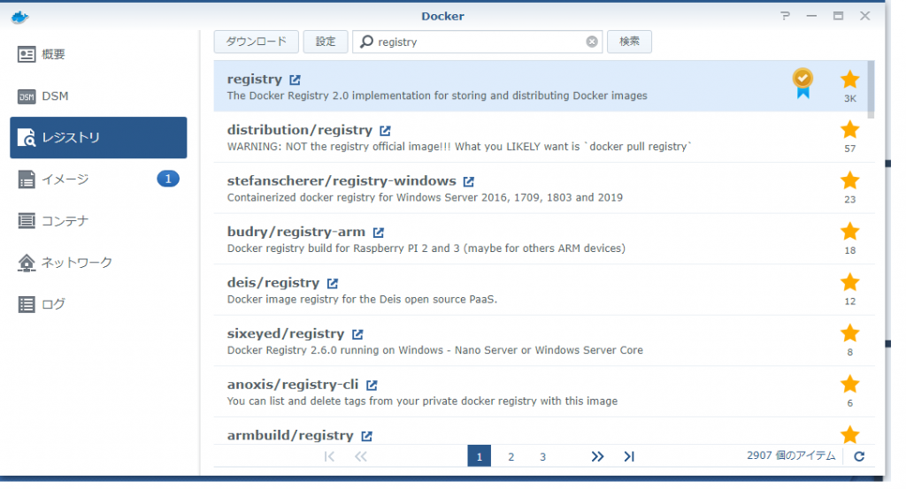
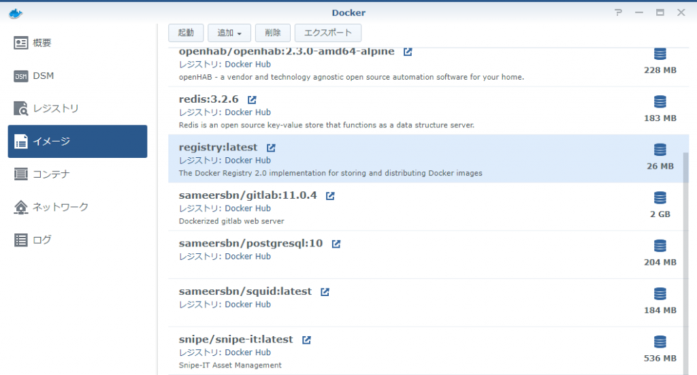
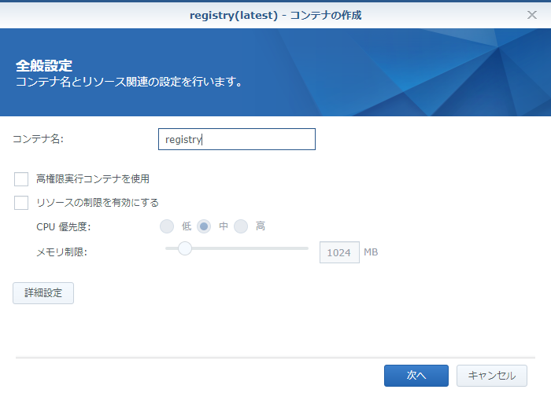
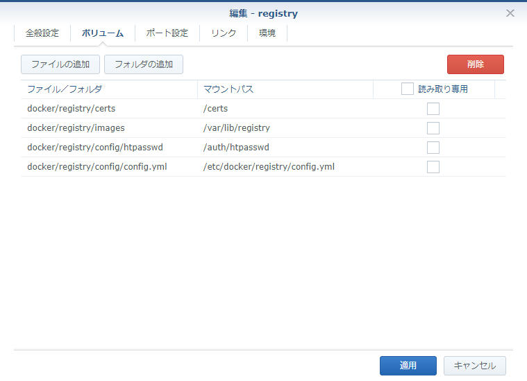
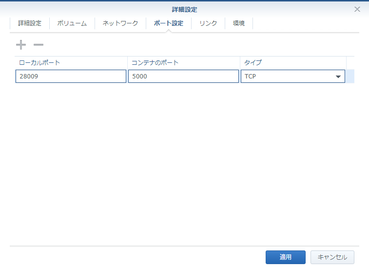
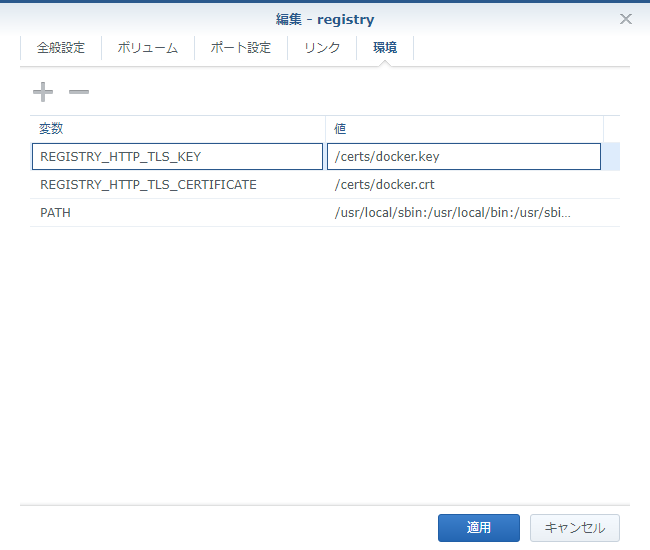

Introduction
Dockerイメージを保存するプライベートなDocker RegistryをSynology NASに構築したのでメモ。 Docker Registryもdockerコンテナとして動作します。
How to?
用意するもの
設定ファイル、イメージを格納するディレクトリを用意します。 これらはdockerコンテナにマウントされます。 今回は下記をマウントします。
- /docker/registry/config/config.yml
- /docker/registry/config/htpasswd
- /docker/registry/images
- /docker/registry/certs
/docker/registry/config/config.yml
1 | version: 0.1 |
/docker/registry/config/htpasswd
registryへのログインパスワードを格納するファイルです。 下記のようにdockerコンテナに作らせます。
1 | docker run --rm -ti xmartlabs/htpasswd > htpasswd |
/docker/registry/images
dockerイメージの保存先です。 ただのフォルダです。
/docker/registry/certs
sslのための証明書、.crt、.keyを格納しておきます。 Let’s Encryptが更新されたらここを更新します。 HTTPSでregistryにアクセスするのが基本です。ここを設定しなくても利用はできますが、dockerの設定で信頼できないregistryにアクセスできるよう設定を追加する必要があるので、ここはきちんと設定しておきます。
コンテナ作成
registryをpullします

{kind=link}
pullできました

{kind=link}
コンテナを作成します

{kind=link}
詳細設定のボリューム

{kind=link}
詳細設定のポート設定

{kind=link}
詳細設定の環境

{kind=link}
以上で完成です。
動作確認
コンテナを起動後、dockerからログインできるかどうかを確認します。 ポート番号を確認し下記のように確認しておきます。 usernameとpasswordは最初に作ったhtpasswdファイルで作成した情報になります。
1 | docker login https://hogehoge:28009/ |
もしssl設定をしていない場合は下記のようになりますので、クライアント側でdockerの設定を変更しておきます。
1 | docker login http://192.168.11.17:28009 |